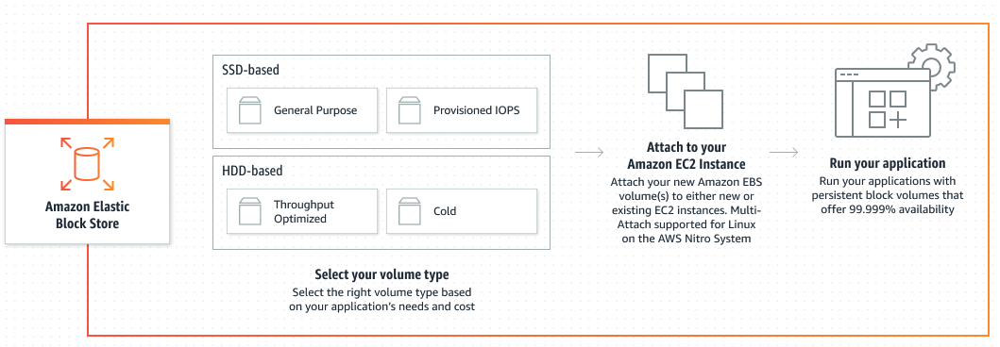
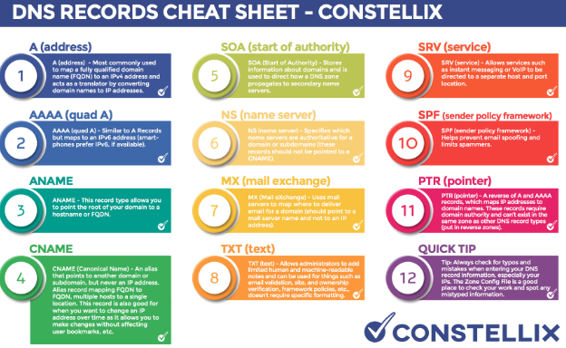

O que é Cloud Computing ?
No cenário antigo era muito comum dentro das empresas termos nossos DataCenter's que geralmente eram lugares extremamente bagunçados e frios. Da maneira antiga, precisavamos nos preocupar com a localizacao, com o fornecedor dos hardwares, com a segurança do local, com a quantidade de recursos que iriamos querer adquirir, afinal, caso compremos a menos irá faltar e se comprar a mais irá sobrar, logo estaremos jogando dinheiro no lixo. É exatamente aí que entra a Cloud. Basicamente voce pode retirar o seu datacenter da sua empresa e passar a utilizar os datacenters da AWS (foco desse curso). Quais as Vantagens ? 1- Custo reduzidos em capital (hardware,software,manutencao,etc), pois tudo quem irá gerenciar é a AWS. 2- Escala Global - poderemos implementar nossos servicos mais próximos do nosso cliente de forma rápida e prática, nos levando ao 3- Performance. 4- Velocidade e agilidade, afinal, conseguimos iniciar um servico em minutos com dois clicks, no cenário anterior precisariamso comprar servidores, etc etc. 5- Aumentamos a segurança poi provavelmente a amazon será mais seguro que sua empresa, 6- Flexibilidade/Remoto , com o servico a distancia temos a possibilidade de trabalhar de qualquer lugar ao invés do funcionário ter que ficar indo até o seu próprio datacenter físico.
Agora que já sabemos o que são clouds, iremos ver os tipos de CLoud. São basicamente três, e o que vai mudando são as Responsábilidades mas em qual sentido ? O que fica de nossa responsábilidade e o que fica da responsabilidade da cloud. Por exemplo, o sistema físico On Premise tudo ficava por nossa conta, desde a rede, armazenamento, até as aplicações em si. Já na cloud isso muda, como podemos ver na imagem abaixo:

IAAS - INFRA AS A SERVICE Como o próprio nome já diz, é quando "contratamos"o servico de infra como servico. Nesse caso é a maioria que iremos ver. É quando alugamos estrutura de T.I de um provedor cloud, e nisso entra (servidor,vm,storage). Aqui é basicamente o hardware em si. PAAS - PLATFORM AS A SERVICE Vem toda a parte física e também a parte de software como a hospedagem, o sistema operacional, o banco, de forma que nós iremos apenas lidar com a aplicacao e os dados em si. Nao configuraremos nada do servidor em si. E por último temos o SAAS - SOFTWARE AS A SERVICE que nós basicamente nao precisamos controlar nada, é o nível mais alto da computacao em nuvem. (Gmail, Dropbox sao exemplos de softwares as a service, voce paga para usar o software como servico).
Agora que já sabemos esses detalhes, precisamos saber que esses datacenter físicos gigantes, possuem basicamente três tipos de "opções". PÚBLICA: público não tem haver com ser gratuito para uso ou não. Público é porque qualquer pessoa pode se cadastrar no site da AWS, e ter acesso aos servicos e seus valores/etc. Quando utilizamos os servicos publicos da aws, nao estamos pegando um servidor físico inteiro só para gente, e sim uma parte dele. PRIVADA: Algumas insituições não gostam e outras nem podem por lei (Bancos,Governo) confiar em nuvem pública e no serviço de segurança da AWS por exemplo (Ao proteger que no mesmo servidor um cliente nao consiga olhar dados do outro por ex) . ,logo, eles precisam optar por uma nuvem Privada. O preço é muito mais alto, porém ele tem a "confiabilidade" que no mesmo espaço físico ninguém mais terá acesso. E também temos a parte Híbrida que uma empresa pode selecionar apenas uma fração de seus dados e colocar em um servidor exclusivo.
AWS - Support
Quando trabalhamos com núvem e nossa empresa depende dela obrigatóriamente, um fator importante é o SUPORTE que teremos caso algo aconteça, fique fora do ar por exemplo. A AWS oferece quatro tipos de suporte e seus benefícios exclusivos.
Todos terão Orientações gerais em 24h horas, Sistema afetado em menos de 12 horas.
Abaixo teremos o beneficio de cada um. Quanto mais caro, possui o beneficio dos anteriores.
Developer - 29 Dólares -
Business - 100 Dólares - Sistema Produção Inativo: 1 Hora.
Enterprise On-Ramp - 5.5k Dólares - Sistema Essencial aos Negócios: 30 min
Empresarial - 15k Dólares - Sistema Essencial Negócios: 15 min
IAM
IAM - Cuida de gerenciar acessos e recursos da AWS. Ele cuida de usuários, grupos, funções, políticas. Aqui ele pode criar usuários, criar grupos, trabalhar com regras, etc. Ele basicamente funciona para organizar os usuários que tem ou não tem acesso a plataforma da AWS. Até o momento só temos nossa conta criada ROOT. Porém é possível que a partir da nossa conta da AWS (ContaMaster) nós podemos criar usuários. Como se você fosse o dono da empresa, e através da sua conta pudesse criar funcionários (usuários), e setar exatamente o que cada um deles terá acesso dentro da nuvem.
Muitas vezes iremos nos deparar com situações que teremos tres funcionários com direito a acesso a EC2 por exemplo. Logo, é mais fácil ao invés de darmos as credencias/politicas para cada um, criar um grupo, com as politicas permitidas (no caso o EC2),
Além da facilidade de grupos, temos um terceiro chamado de Roles, são relacionadas não a usuários e sim a serviços. Por imagine que uma máquina virtual (EC2) precisa acessar arquivos em um banco (S3). Geralmente os bancos S3 tem configuracoes em quem pode acessa-los. Então, através das ROLES podemos setar qual máquina ec2 tem acesso a s3, ou entao todas as ec2's terem acesso as s3's e assim por diante. Para criarmos Grupos e Usuários basta procurarmos por IAM no console da amazon, e ao lado esquerdo teremos : Grupos de Usuários, Usuários.
IdentityCENTER - Antigo SingleSignOn - Podemos criar usuários através do IAM ou do IdentityCenter, que possui basicamente as mesmas funcionalidades, com alguns "upgrades". O principal fator é que ele nos permite acessar softwares externos com a autorizacao da AWS. Em resumo faz tudo do IAM, porém nos permite sincronizar com softwares de terceiros.
MFA
MFA - multifactoryAuthentication é basicamente quando "protegemos" ainda mais nossa segurança das contas aws. Para isso precisamos baixar em nosso smartphone um aplicativo chamado Google Authentication. Através dele, a cada 30 segundos ele estará gerando um número aleatório de 06 caracteres. Nós configuramos nossa conta da AWS para utilizart MFA ( IAM => Adicionar MFA.) , e ao logar, precisamos sempre olhar nosso celular, pegar o número exato, digitar e pronto. Conta protegida.
ORGANIZATION
Através das Organizações, podemos literalmente criar uma organização dentro da nossa cloud. Por exemplo, imagine que nossa empresa seja de sao paulo, e ao decorrer dos anos ela se espanda para o rio de janeiro, para o sul, ou até mesmo par aoutro país. Como organizar isso tudo dentro de uma conta ? Pois se apenas formos criando usuários, ele irá ficar todo bagunçado para sabermos quem é quem, de onde é quem. Através das organizações, podemos criar subcontas dentro da nossa conta. Dessa forma, A conta root que criamos por ex, será a conta principal. Através dela, podemos criar uma subconta: Sao Paulo, Rio de Janeiro, Sul. Assim podemos subdividr nosas empresa em quantas partes quisermos, cada parte podemos criar as contas de seus funcionários, e no final através da root teremos acesso a tudo de forma unificada. Para habilitar as Organizações basta clicar em "minha conta"no canto superior direito, e em organizacao.Organizacoes criadas, podemos habilitar o IdentityCenter.
Estudar diferenca IAM VS IdentityCenter
Política de Senhas
A amazon e também a empresa que voce trabalha provavelmente irá se importar bastante com proteção/políticas de senhas. Podemos melhorar essa senha e obrigatóriamente a de nossos usuários. Para isso basta irmos em IAM -> Configuracoes da conta. Ali teremos regras previamente estabelecidas, e devemos personalizar as senhas.
CloudShell & CLI
Além do console (aws web) podemos acessar os sistemas da aws de outras duas formas, via CLI e via CloudShell. Para utilziarmos a AWSCLI, basta digitarmos cli aws no google e ver o passo a passo para instalar, assim comna propria aws podemos visualizar os comandos da cli. Mas, para utilizar o cli precisamos assim como visto, instalar um software em nossa maquina e também autenticar essa máquina. A terceira opcao nós nao iremos instalar nada em nossa máquina. É uma maquina linux que a aws disponibiliza para gente sem que precisemos nos autenticar, pois ela já estará dentro da nosas cloud. Para acessa-la, basta logarmos na aws, e no canto superior/ direito/central teremos o ícone do power shell. onde a partir dali poderemos começar a utilizar as linhas de código.
Mas e se optarmos utilizar a CLI ? Para utilizar a cli precisamos como visot, nos autenticar. Essa autenticacao nao será realizada apenas via Login e Senha. Ela irá nos pedir também a Acess Key, Private Key. Essas chaves podem ser geradas por usuários. Basicamente UserName, Password, MFA serão utilizados para console, e AccessKey e PrivateKey para CLI. Para criar essas chaves de acesso, basta ir em IAM => Usuários => Selecionar Usuário . Lá embaixo teremos uma sessao de Chave de Acesso, onde poderemos cria-las. A partir desse momento, teremos duas chaves, a chave privada e a chave de acesso. OBS: A única vez que iremos visualizar essa secretKey é nesse momento, ao fecharmos a tela, ela terá sido perdida, por isso é importante realizar o seu download.
AWS CredentialReport & AccessAdvisor
Ambas são relatórios que podemos acessar para ter diversas informacoes sobre nossos "usuários". Através dessa CredentialReport Que irá nos falar sobre todas as credencias de todos os usuários. Se usam MFA ou nao, quando acessaram pela última vez, etc. Já o AccessAdvisor irá mostrar cada usuário e quais servicos cada usuário tem acesso. Para isso, basta irmos em IAM => Relatórios de Acesso. Ali teremos o Relatório de Credenciais. Já para vermos o que cada usuário tem acesso, basta irmos em usuários, selecionarmos o usuário, e ali teremos a opcao de Consultor de Acesso, que nos mostrará de forma bem mais detalhada.
Estrutura da AWS
Aqui iremos entender como funciona a AWS físicamente, ou o que chamamos de infraestrutura global. Ou seja, como que todo mundo no planeta tem ou pode ter acesso aos seus serviços ? Basicamente temos as Regiões, zonas de disponibilidade e os Pontos de Referencia. Basicamente teremos uma Região, que dentro delas teremos nossas zonas de disponibilidaes, que são nossos DataCenters com suas megas estruturas, podendo dentro de uma regiao, ter várias zonas de disopnibilidade , que são sempre interligadas entre si. ATÉ AQUI: Dentro das regiões possuímos nossas Zonas de disponibilidade (Datacenters, conectados entre si.). Mas também temos as Zona Locais, que são conectadas próximas as zonas de disponibilidade, que servem para colocar o mais próximo possível do cliente a computação, armazenamento, banco de dados, etc. Em resumo, temos as zonas de disponibilidade, e imagine que em uma cidade relativamente distante a ela, tenhamos um polo industrial, eles vão lá, eles alugam de um outro datacenter um espaço, e criam uma "zona menor" para suprir melhor esses clientes. E também temos o chamado de WaveLength, é feita exclusivamente para desenvolvedores, que permite uma latencia muito menor, focando em dispositivos móveis, proporcionando uma boa experiencia para o usuário. E para finalizar temos os Outposts que é a menor estrutura que a aws pode criar. Para suprir micro clientes.
Podemos entao observar que a AWS já possui zonas disponiveis em todos os continentes, e além disso a conexao entre os datacenter entre si, principalmente os próximos, é a rede com maior capacidade do planeta. Todas as regioes meio que se parecem uma só. Voce acessa servicos de uma regiao a outra la do outro lado do planeta com apenas cliques.
Resumo:
Região: Local/Regiao/Zona onde a AWS tem operação física.
Zona de disponibilidade: Datacenters físicos da AWS, podendo ter mais de um dentro de uma região.
Zona Local: Geralmente são zonas menores localizadas em alguma cidade próxima as zonas de disponibilidade, para suprir uma pequena cidade com um polo industrial por exemplo.
WaveLength - É exclusivo para desenvolvedores, permitidno que as aplicacoes subidas ali tenham a menor latencia para aplicacoes mobile.
Outposts - é a menor estrutura da aws, geralmente alugam uma partezinha de outro datacenter apenas para suprir algum cliente em específico.
Aws Share Responsibility Model
Aqui iremos tratar das responsabilidades que a sua empresa/PersonalAccount, tem ersponsabilidade por uma parte da estrutra Cloud, e a AWS tem responsabilidade de outra parte dessas responsabilidades. O que isso quer dizer? Nem tudo que voce hospeda dentro da AWS e acontece algo de errado quer dizer que realmente é culpa da AWS. Nem tudo está encima da AWS, nós também temos fatias de responsabilidade.

Em azul (Customer), são as nossas responsabilidades, e em laranja (AWS) são as responsabilidades da cloud. Vale lembrar que essas responsabilidades sao responsaveis tanto no Google quanto na Microsoft tb. Em geral, é de responsabilidade da AWS a parte computacional, o armazenamento , a barte de banco de dados e a parte de rede. Não precisamos nos preocupar com a segurança de nada disso. Não receberemos nunca um email por exemplo informando que um datacenter ter parado. Nem que o disco do sotarage nao está resopndendo e precisamos troca-lo, ou entao que a rede estará bem próximo de 100% de utilizacao e precisaremos adicionar mais links... Quando pagamos por servicos estamos pagando por toda essa segurança. Agora, o que a AWS não consegue controlar? Os Tipos de Dados que colocaremos lá dentro, Por ex: podemos armazenar fotos proibas por leis, e isso não é responsabilidade da AWS. As aplicacoes, usuários criados, organizacoes tudo é de nossa responsabilidade. Por ex: Se um usuário for criado com acesso adm, e derrubar tudo, "cagar" o sistema inteiro, a responsabilidade é nossa de termos permitido aquele usuário de ter entrado. Sistemas Operacionais, Network, Firewall é tudo de nossa responsabilidade. Se criarmos um firewall que permite qualquer acesso e formos hackeados, a culpa é nossa.
Elastic Compute Cloud - EC2
Aqui provavelmetne é talvez o serviço mais utilizado da AWS. EC2 significa Elastic Compute Cloud. Ele é uma IAAS (Infra as a Service) da AWS para máquinas virtuais (VM). Entendendo uma VM, entendemos uma EC2. Vamos por antigamente. Antigamente tínhamos um servidor físico, onde compravamos o hardware por si só, compravamos memoria, processador, network, etc. Nele, instalavamos um OS (Linux/Windux), e no seu topo instalavamos nossos aplicativos. E quais eram os grandes problemas? Se tivermos 128gb de memório no servidor, um app usa 2, outro usa 4, outro usa 5, oS usa 10. Logo, estaremos usando nem 30gb de memoria, e teremos 90gb de memória parada e isso significa gastar dinheiro atoa. Através da virtualizacao (EC2), temos um cluster de servidores(vários servidores), onde possuímos o hardware de cada servidor, nesse harware temos instalado um HyperVisor que é responsável por instanciar diversas fraçõe de OS, e designar uma quantiadde de recursos para cada um. E é exatamente isso que a AWS te vende em forma de EC2. Uma fração de um servidor, onde voce instancia seu OS e coloca seus recursos.

Tipos de EC2
Agora que já sabemos o que é um ec2, vamos entender suas peculiaridades. Quando tinhamos o hardware fisico em nossa empresa, nós definimos exatamente o que iriamos comprar. Ao usarmos o servico cloud, nós também temos como especificar o que queremos alugar da AWS. E aqui que entra o que chamamos de EC2 INSTANCES TYPES.. Existem diversos tipos de instancias otimizadas da AWS para cada caso de uso. CONCEITO QUE AWS COBRA EM PROVA. Como a aws já entende basicamente quem é o seu consumidor, eles já deixaram pré determinados alguns tipos de ec2 já com recursos pré definidos mediante ao oque você quer. Dessa forma voce nao precisa ficar configurando quanto de memoria, etc na mão. Por exemplo:
Uso Geral, Otimizadas para computação (+ CPU), Otimizada para memória (+ Memória), Computação Acelerada (+ ), Otimizada para Armazenamento. Ou seja, basicamente a AWS divide suas EC2 a base de suas particularidades.
Agora que já sabemos o que é uma EC2 e quais seus tipos, precisamos saber quais são os seus Valores. Mas antes de falarmos em valores, precisamos saber quais são os MODELOS DE AQUISIÇÃO. O primeiro que iremos falar é o SOB-DEMANDA, que é o modelo mais caro da AWS. É aquele modelo qeu voce abre o computador, entra no console, cria uma máquina e em questão de minutos ela já estará funcionando. Outro serviço é o SAVING PLANS que são os planos para economizar. Eles são bem mais baratos que o sob-demanda, porém é necessário que firmemos um contrato com a AWS de um a três anos. Porém a aws ainda possui uma terceira opção, chamada de SPOT. É um valor barato, que pode chega ra 90% a menos que o sob-demand. Mas o que ela é ? Ela cria sua EC2/Recurso baseado em uma instancia qeu a aws não está utilizando, porém depois ela pode querer utilizar. Ou seja, de uma hora para outra ela pode: "Tirar seu servidor do ar". Muito utilizado para testar aplicacoes, coisas que não necessáriamente estejam em ambiente de producao, Trabalhos tolerantes a falhas, aplicativos/aplicacoes para testes, etc. Na verdade ainda temos outras opcoes, como o Host Dedicados que são os mais caros. Estaremos pagando pelo host em si. Geralmente quem usa são empresas financeiras ou governos. Aqui estamos pagando pela nuvem privada. E por último mas não menos importante temos a Capacidade por Demanda. Aqui é um preco um pouco mais em cnta do que o sob demanda. É basicamente quando alugamos uma máquina por um tempo prévio, avisamos a aws: precisaremos de uma marca com x x x de coisas, que usaremos por 72 horas e deopis o servico é encerrado.
Resumo
HOST DEDICADO: $$$$$ Servidor inteiro dedicado, nuvem Privada. Geralmente utilizado por instituicoes financeiras e Governos.
SOB-DEMANDA: $$$$ Máquina criada imediatamente, sem contrato pré estabelecido. Subimos ela e pagamos conforme formos usando por tempo indefinido.
CAPACIDADE-DEMANDA $$$ É quando alugamos por tempo pré determinado uma capacidade X de recursos. Ex: EC2 c/ tais configs por 72 horas.
SAVING-PLANS $$ São planos mais economicos, onde estabelecemos contratos pré definidos de 01 a 03 anos, informando a amazon quanto tempo ficaremos.
SPOT $ É quando a Amazon nos fornece uma instancia que não está sendo utilizada mas pode vir a ser. Logo, nosso serviço pode sair do ar a qualquer instante.
E como a AWS cobra esses valores? A AWS cobra cada instância por SEGUNDO. Em resumo funcion aigual uma academia, quanto mais comprometido formos, quanto maior tempo estabelercermos o contrato, mais barato será o servico. Quanto mais inesperado for, mais caro será o servico.
Valores da EC2
Para saber exatamente os valores podemos ir no site da amazon e ver os tipos recursos, e o que é adicional para cada máquina. Porém olhar tudo no olho pode se tornar um pouco confuso. Para solucionar isso, a AWS nos proporciona uma Calculadora de Preços,onde poderemos ir setando os recursos que gostaermos de ir adicionado a nossa EC2, e assim sabermos o quanto realmente iremos gastar.
Instanciando uma EC2
A partir de todo nosso conhecimento adquirido nesse capitulo, iremos finalmente por a mão na massa para subir uma máquina EC2. Para isso usaremos um exemplo no qual criaremos um web-server com o objetivo de subir um site para a ec2.
A primeira coisa que precisamos fazer é irmos até a área de EC2 dentro da AWS para que possamos começar. Para testes, utilize o northVirginia. Pois ali encontramos as maiores zonas de disponibilidade e também os melhores valores $. Entrando dentro da área de EC2, a primeira coisa que nos deparamos é um mapeamento geral de todas as nossas EC2.

Para criarmos uma instancia, clicamos no botao laranja EXECUTAR INSTANCIA onde ele irá nos guiar para um passo a passo.
Passo a Passo:
Passo 01: Escolher um nome para nosso servidor/ec2
Passo 02: Escolher qual SO será utilizado, qual tipo de Linux será utilizado, a imagem do linux.
Passo 03: Em seguida precisaremos selecionar o tipo de instancia (Qual máquina irá rodar, os recursos), como já vimos nos tópicos acima.
Passo04: Chave de Login - Para acessarmos essa máquina virtual de outro local, sua casa por exemplo, geralmente utilizaremos via SSH ou via ClientShell. Para que possamos acessar de casa ou Trabalho, ou de qualqeur local que nao esteja dentro da rede AWS, precisamos ter uma chave de login. Que pode ser criado ali mesmo. Usar RSA + .PPK
Passo05: Configurarcoes Redes - Configuraremos o firewall, quem pode acessar, quais tipos se pode ou nao http, https.
Passo06: Configuracao de Armazenamento onde selecionaremos os recursos da nossa máquina.
Após o passo a passo, podemos criar nossa ec2, que depois de cerca de cinco minutos ele irá subir nossa ec2. Dessa forma, ao voltarmos a área de EC2 ela já estará ali com todas as informações da mesma, como seu dns, ip publico, ip privado, etc. Ao selecionarmos um opnto, aparecerá uma série de informacoes abaixo. Provavelmente se colocarmos durante a criacao algum script inicial, após a máqiuna estar rodando, já podemos acessa-la através de seu ip-público via protocolo HTTP. Ou seja, ela já estará liberada para que qualquer pessoa tenha acesso a aplicacao apenas. Nao a nossa máquina para executar tarefas/mudancas. Para isso, é necessário como já vimos acesasr via PowerShell ou via SSH.
Acessando via SSH
Hoje em dia a form amais segura de acessar sua ec2 é via o próprio terminal sedido pela amazon. Basta irmos até as ec2, selecionarmos a que iremos querer conectar, clicar no canto superior em Conectar. A forma mais fácil é a conexao de instancia do EC2. Basta clicar em Conectar e pronto. estaremos dentro da nossa máquina linux (ec2).
Status da Instância
Ao selecionarmos nossa h2, no canto superior ao lado de Coenctar, temos o Estado da Instancia onde iremos poder interromper a instancia, reiniciar a instancia e também encerrar a instancia.
Alterando o Security Group
Quando falamos na parte de configuracoes de seguranca ao criar uma máquina, falamos em seu firewall. Firewall é um securtity group que estará protegendo nossa instancia EC2. Aqui poderemos permitir ou bloquear acessos para nossa instancia. Podemos permitir ou bloquear trafego In e Out da instancia. Ao lado esquerdo da EC2, temos uma opção chamada SecurityGroups onde teremos nossos grupos de seguranca. Ali podemos criar e configurar grupos, que ficarao salvos, e que possamos usar em quantos servicos ec2 quisermos. Ao alterarmos alguma regra de algum grupo, imediatamente será aplicada para todos seus servicos que utilizem a máquina.
EBS - Elastic Block Store (EC2)
É nada mais nada menos do que o Disco de HD nas máquinas. Se formos pensar, não seria muito inteligente da aws utilizar o próprio disco dos servidores, afinal, lembra quando falamos dos datacenters? Nos datacenter fisicos, se um servidor parasse de funcionar automaticamente tudo que está em seu disco também pararia, além dos recursos ficarem limitados, etc. Então a AWS pensou: Ao invés de utilizar os discos locais dos servidores, ela passará a comprar servidor exclusivo para discos (storages) e vai fazer com que todos esses se paressam um só. Em resumo ela cria um Cluster de Storage. Esse cluster de storage é conectado ao servidor físico. Em resumo, Quando nossa EC2 do nosso servidor precisa de acesso a disco, ele acessa ele acessa o storage, cria os discos virtuais (EBS) via network. Consequentemente caso um falhe, ele terá replicações dentro do cluster. Podemos então concluir que o disco da AWS é um disco de Rede.. Temos ainda uma grande vantagem nessa modelagem da AWS. Imagine que não queiramos mais um servidor, podemos exclui-lo, e caso futuramente precisemos desses dados, basta criarmos outro servidor, e conseguimos recuperar os dados através do que chamamos de ATTACH .Ao montarmos nossas máquinas virtuais, automáticamente temos 30 gb de armazenamento gratuitos.. Esses discos SEMPRE serão disponibilizados na mesma zona de localidade que ele foi criado. Teoricamente não podemos move-los para outra zona. A menos que seja via SnapChots. Caso a próprio aws pergunte, sómente pode ser attach dentro da mesma zona de disponibilidade.
Tipos de Discos
Não existe somente um tiop de disco, afinal, nem faria tanto sentido ter somente um tipo de disco para todas as possíveis funcoes que temos para fazer dentro da aws. Se quisermos armazenar Backup, pode ser um disco lento, se for um SQL precisa ser um disco rápido. Temos basicamente dois tipos de discos que a AWS utiliza: HDD e SSD - Hdd lento porém tem mais espaço, já o SSD é muito rápido porém tem menos espaço. Logo podemos confirmar que o HDD é muito mais barato que o SSD. Ao acessar a página da EBS podemos conferir os tipos de volumes. Existem tipos de SSD e tipos de HDS. Por isso sempre antes de começarmos um projeto, precisamos dar uma olhada nos tipos de informacoes de cada uma. Uma outra coisa que ali dentro vale muito a pena observar é o IOPS - Quantas operacoes faz por segundo e também a transferencia de dados/segundo. Via de curiosidade o maior que temos é o io2 BlockExpress. gp2 -> gp3 -> io1, io2 -> io2blockExpress. Estudar Tipos de Discos para Possíveis Questoes de provas.
Criando Discos EBS
Aqui colocaremos em prática nosso estudo sobre EBS. Logo quando estamos criando uma instancia de EC2 já podemos configurar seu volume, porém também é possível ver depois, clicando em ec2, selecionando-o e em esguida ver o meu volume EBS. Ao selecionar o volume podemos ver algumas de suas configuracoes. Porém, é possível criarmos apenas um novo volume, e associarmos ao nosso server. Basta clicarmos em Criar volume, selecionar o tipo de disco que deseja, selecionar o tamanho e também a zona de disponibilidae. Lembre-se, só podemos associar um disco a uma instancia da mesma zona,(previnindo latencia). Também podemos criar SnapShots e Tags... Em seguida podemos clicar em Criar Volume e o volume terá sido criado. Para associarmos ele , clicamos nele, e lá na parte superior clicamos em associar volume, e selecionarmos a nossa instancia. Um disco só pode ser utilizado em uma instância.
Criando um SnapShots
Funciona basicamente para backups, e também para que possamos transferir um "volume" de uma zona para outra. Todas as vezes que formos atualizar um servidor por exemplo é bem recomendado que realizemos o snapchot primeiro. E podemos configurar esse snapchop para ser feito automaticamente semanalmente, diariamente, da forma que preferirmos. Lembre-se que o snapcho em si não é pago, o que é pago é espaço de armazenamento para as informacoes. Dentro da area de volumes selecionamos ele, e clicamos em criar snapshot. A criacao do snapshot nao altera em NADA o funcionamento do servidor em si. A partir do momento que temos um snapshot criado, podemos criar um volume baseado nele mesmo.
Criando uma imagem AMI
Significa Amazon Machine Image. Quando vamos criar uma instancia da amazon EC2, precisamos selecionar uma imagem para starta-la. Imagine que selecionemos, criemos nossa EC2, configuramos diversas coisas dentro dela, e enfim temos um servidor web por exemplo redondinho rodando. Supomos que na nossa empresa será necessário mais 4 máquinas dessa. Nós podemos através dela, criar uma AMI Própria de forma que quando formos criar a próxima EC2, quando formos selecionar a AMI já selecionaremos diretamente a AMI que criamos e assim ele já surgirá todo configurado.
Para criarmos essa AMI, pegamos uma instancia já do jeito que queremos que seja a imagem, selecionamos ela, vamos em acoes -> imagem e modelo -> Criar imagem. Apartir dai nossa imagem já estará criada. Agora quando formos criarmos uma nova instancia, basta clicarmos em Minhas AMI'S, e estará lá nossa imagem criada, e ao criarmos pronto. Já estará lá para começarmos a ser utilizada.
Sobre EFS
EF'S - Elastic File System, é um oturo sistema de armazenamento da Aws que serve para tampar um problema que o EBS não cobre. O EFS Vem para poder ser compartilhado por múltiplos hosts. Link do Site. A partir do momento que criamos uma EFS, armazenamos arquivos dentro dele, e esses arquivos podem ser comparitlhados com quantos servidores quisermos, em qualquer zona regional quisermos. Outra vantagem é que se um servidor por exemplo adicionar um arquivo ao EFS, os outros servidores também irão ter acesso a esse arquivo imediatamente. Seu único problema é que ele tem um alto custo financeiro.
Sobre FSx
File System X - Funciona mais ou menos como a que vimos acima, porém
REVER E ESTUDAR/ ANOTAR SOBRE FSX.Resumo:
EBS - Disco tradicional da AWS na qual podemos optar entre SSD e HD. É o disco de uma máquina só e obrigatóriamente da mesma zona da ec2.
EFS - Disco que pode se conectar com diversas ec2, e também com com qualquer zona. Alto custo financeiro. 100%Linux
FSx -
Escalabilidade EC2
A partir daqui iremos começar a estuadr sobre: Escalabilidade, Elasticidade e Disponibilidade. AWS adora cobrar isso em provas. Toda a estrutura da AWS é baseado enssas tres palavras, afinal, nao faz sentido termos um usuário que precise acesasr nosso webSite, ai ele tem a URL, ela é apontada para a rede da AWS, e la dentro temos um servidor, que tem uma página web. Caso esse servidor venha a cair, a página ficará fora do ar, e logo os clientes irão reclamar. Então por causa disso, que precisamos em todos os projetos hospedados na aws disponibilizar escalabilidade, elasticidade e disponibilidade. Existem dois tipos de escalabilidade Vertical & Horizontal. Uma escalabilidade Vertical estamos falando em pegar o tipo da nossa instancia e aumentar esse tipo. Por exemplo, as vezes iniciamos nosso servidor web com um t2 micro, e c/ o passar do tempo fomos vendo que não seria suficiente e precisariamos aumentar para um nivel acima. Quando aumentamos uma capacidade da mesma instancia, temos uma escalabilidade Vertical. Já a escalabilidade Horizontal é quando adicionamos mais instancias. As vezes uma instancia não irá servir, por isso temos que aumentar, logo, temos a escalabilidade vertical. Para que tudo isso ococarra, dois servicos trabalham em conjunto: Auto Scaling + ELB (Elastic Low Balance).
Já a Elasticidade ela está meio que dentro de escalabilidade. Elasticidade é a capacidade do sistema que já criamos de se adaptar automáticamente as mudanças de Load(Carga). Por exemplo se temos dois servidores dentro de um grupo de autoscaling, isso significa que o usuário quer acessar nosso site, ele será redirecionado para um servidor, e se algo estiver errado c esse servidor, ele será redirecionado para um outro através do autoscaling elb. A elasticidade entra no seguinte cenário: Imagina o cenário acima que tenhamos 02 servidores, se os dois estiverem super congestionados, com 90% em cada um, a elasticidade será responsável em saber que precisa se esticar, se expandir, e irá criar um outro servidor. Assim como se dois estiverem vazios, ele será resopnsável por apagar o terceiro.
Por último temos a Disponibilidade que ao pé da letra diz, estar disponível. Basicamente distribuir nossos servidores em diversa zonas de disponibilidade diferentes. A partir daqui toda topologia que criarmos na aws precisamos pensar em escalabilidade, elasticidade e disponibilidade, sem essas 03 palalavras, em um futuro próximo teremos problemas.
AutoScaling
É um sistema bem simples e deve ser utilizado. Por exemplo, temos uma quantidades de usuários que desejam acessar nossa aplicacao web. De um lado temos os clientes, do outro teremos nosso servidor, onde estará hospedando a página web. Como já sabemos que nao precisaremos somente um servidor, e queremos apresentar uma disponibilidade e escalabilidade maior, ao invés de criarmos um servidor manualmente, criaremos um Grupo de AutoScaling. Quando formos criar esse grupo, a primeira etapa é criarmos o modelo da instancia (qtd memoria, placa, ami, etc). O segundo passo é criar o autoScaling e suas configuracoes em si. que significam: Dentro dele colocaremos "precisaremos de no mínimo dois servidores funcionando, porém se um se tornar indisopnível, ou se o processamento ficar mais alto ou se a aplicacao dentro de um deles se tornar nao saudavel, precisamos que crie o terceiro, caso aconteca denovo o quarto. E o grande ponto do AutoScaling é que tudo isso aconteca automáticamente. Ele também é responsavel para observar se já existe isntancias demais com pouco uso, e as remove. Isso é o que chamamos de SCALE IN/ SCALE OUT. Dessa forma temos uma escalabilidade Horizontal, e também estamos adicionando uma disponibilidade afinal, podem estar sendo criada em zonas de disponibilidade diferentes.
ELB & ALB
Aqui estamos falando do melhor amigo do autoscaling, é igual arroz e feijao para brasileiros. Vamos retornar ao ecxxemplo acima dos usuários e do nosso grupo de auto scaling. Existe um buraco entre eles que ainda não foi explicado. Afinal, quando o usuário digita a url da nossa aplicacao, como que a requisicao sabe para exatamente qual servidor ela irá ? Para saber, entre o usuário e o servidor é necessário o Load Balancer. Ele tem que ver quem é o webserver1, quem é o webserver2, e também tem que ver que estao dentro de um autoscalinggroup, pois caso o autoscaling crie um novo webserver, ele precisa notificar o loadbalance, para que o load saiba e possa encaminhar. Por isso sempre qeu criamos um autoscaling sempre criamos um loadbalance e vice-versa. O LoadBalance irá gerar uma URL, uma url bem estranha. Então, quando o usuário digita a sua url, o DNS o redireciona para o LoadBalance, e de acordo com a regra de balanceamento, ele irá redirecionar para o servidor correto. Temos três tipos de LoadBalance que podem ser conferidos dentro do site, porém o mais utilizado é chamado de Aplication Load Balance, pois através dele conseguimos fazer decisoes de roteamento baseado em aplicacoes (http, https).
Criando a Topologia
Aqui iremos colocar a mao na massa e iremos criar nosso auto scaling. Começaremos criando nosso Modelo de Execução. Lembre-se, Aqui não estaremos criando uma instância, estaremos criando um modelo para que todas as instancias dentro do autoscaling saiam igual a ela. Aqui o procedimento será praticamente igual ao de criar uma instancia, se nao for Exatamente igual. O próximo passo, é comecar a criar nosso Grupo de Auto Scaling. O primeiro passo é configurar o nome do AutoScaling, e em seguida escolher o modelo das instancias. Em segundo passo, iremos configurar as redes, e as zonas que as nossas instancias serão criadas. Em terceiro, iremos criar nosso Balanceamento de Carga, onde colocaremos o seu tipom, seu nome, e também se será apenas interno ou externo, e o delay, que é o tempo que o loadbalance irá demorar par acomecar a enviar para um servidor recem criado. O quarto passo é extremamente importante, Precisamos setar nossa capacidade desejada, o míninimo viavel, e o máximo. Ou seja, "Eu desejo trabalahr com dois servidores o tempo inteiro, o mínimo viavel é um servidor, e pode se espandidr até 04 servidores". Quinto passo podemos adicionar notificacoes caso queiramos e pronto. Finalizado.. A partir daqui, não iremos mais acessar nossa aplicacao através do IP público da nossa máquina, e sim através do link fornecido pelo nosso LoadBalance.
S3
S3 - Simples Storage Service - Serviço com acesso ilimitado de espaço. Ao criarmos uma pasta/Bucket dentro da aws, podemos colocar la dentro videos/fotos/doc/. Lá podemos organizar da forma que quisermos. Não tem preço fixo, pagamos exatamente pela quantiadde que utilizamos. Para nos habituarmos ao linguajar da AWS, chamamos de Bucket as pastas, e de Objetos todos os arquivos la dentro. Basicamente criamos uma bucket, dentro dela podemos nos organizar colocando nossos arquivos dentro de pastas e assim por diante. Por trás dos panos a AWS possui um grande Cluster onde todos os objetos ficam salvos, por isso sendo ilimitado. Grandes clientes S3 é a netflix por exemplo, que em 2020 pagava 20 milhões de dólares por mês para a AWS para utilizar seu servico de S3 & outros serviços.
S3 é muito utilizado para quando precisamos fazer backup's de arquivos de uma empresa, ou então quando os arquivos precisam ser disponibilizados para uma aplicacao, websites estáticos, hospedagem de vídeos, ou então até mesmo Archive (Que é quando precisamos guardar arquivos por uma quantiade X de anos devido a política da empresa por ex). S3 pode ser muito caro ou baraot, depende de em quanto tempo você irá querer resgatar aquele dado. Para criarmos uma Bucket é necessário que fornecemos um nome único. O tamanho máximo de um objeto único que podemos hospedar na AWS é de 5TB.
Criando uma Bucket + Upload
Basta acessarmos a área S3 e em seguida Criar uma Bucket. O primeiro passo é escolhermos o Nome Único e em seguida a região a ser criada. De forma muito simples temos nossa bucket criada e em seguida basta clicar em "adicionar arquivos" ou então arrastar o arquivo para a região da página, e clicar em Carregar. Após upados, podemos clicar nesse arquivo e iremos observar suas propriedades. O principal motivo do nome único de uma bucket, é que é gerado um link único para cada objeto, baseado em seu nome. Porém se copiarmos o link e jogarmos no navegador, não conseguiremos acessar o arquivo, pois geralmente a bucket será Privada. Caso queiremos abrir, precisamos clicar no botão abrir, pois o próprio botão já irá gerar uma URL com um response content + token de seguranca, assim permite ser aberta com tal token.
Classes do S3
Após termos uma bucket criada e colocarmos duas imagens por exemplo lá dentro, precisamos pensar em quanto isso irá custar ? Será que a AWS S3 possui algo Free Tier ? E a resposta é que sim. A AWS fornece até 5gb gratuitos no S3 por até 12 meses. Porém, e se tivermos que pagar? Isso irá depender da classe que será armazenada. A AWS possui uma grande lista de classes onde podemos armazenar diversos tipos de objetos. Por exemplo, temos um backup de uma empresa. Provavelmente só iremos acessar esse backup se algo der errado ou então provavelmente nucna serão acessados. Logo, para esse caso, podemos colocar em uma classe mais barata ... Já supomos que tenhamos uma série de vídeos na qual construiremos um website para funcionários da empresa acessarem e poderem assistir. Esses vídeos serão acessados provavelmente o tempo inteiro, então precisam ficar em uma área mais "nobre". Essas áreas são as chamadas Classes. Vale ressaltar que: Uma Bucket não pertence a uma classe, e sim os objetos dentro de uma bucket que pertencem a uma classe. Voce pode ter 10 objetos, cada um pertencendo a uma classe diferente (caso hajam). Entendendo as classes, podemos partir para os seus Valores, onde na mesma página podemos conferir os valores e realizar um possível resumo.
LER CADA UMA E ELABORAR UM RESUMO. LINK
Hospedando um WebSite
WebSites estáticos também são uma ótima opção para serem hospedados na S3, para isso, precisamos criar uma bucket pública bastando não selecionar o bloqueio. Em seguida podemos realizar o up do site igual vimos acima da mesma forma que fazemos com qualquer objeto, ao ser upado, seleciona-lo, clicar em propriedades e ativar a hospedagem de site estático e definir o elemento raíz. Porém mesmo assim, ainda não iremos conseguir acessar nosso site estático mesmo tendo subido o objeto como público, pois existe o que chamamos de Política da Bucket. Ali podemos editar a política colocando esse JSON.
{ "Version": "2012-10-17", "Statement": [ { "Sid": "PublicReadGetObject", "Effect": "Allow", "Principal": "*", "Action": [ "s3:GetObject" ], "Resource": [ "arn:aws:s3:::Bucket-Name/*" ] } ] }
Versionamento
Podemos muitas vezes deletar arquivos "sem querer". Porém quando se trata de arquivos de empresas precisamos levar a sério. Para isso que existe o versionamento, para previnir delecoes erradas, ou arquivos que precisam ser restaurantes com o tempo.
Básicamente quando vamos excluir algo do S3, ele não será deletado e sim marcado por uma TAG. Logo, é possível que recuperemos. Sempre que realizamos um download por exemplo de um objeto dentro de uma bucket, outra versão é criada. Nós pagamos por todas as cópias e seu devido espaço, por isso podemos configurar já que a princípio as versões são ilimitadas. Vale ressaltar que ao habilitar o versionamento de bucket, ele só contará dali para frente. Caso habilite o versionamento em uma bucket que já contenha determinado número de arquivos, eles não estarão dentro do versionamento.
Replicação de Buckets
Aqui falaremos sobre replicação de dados dentro do S3. É extremamente importante caso tenhamos um grupo de objetos que deve ser replicado para uma outra área/região da AWS. Basicametne temos dois cenários: cenário 01 Temos uma bucket onde ficam nossos objetos de Desenvolvimento e gostariamos que sempre que uma feature fosse lancada ela se replicasse para uma outra bucket de Producao por exemplo. Isso é chamado de SRR - Same Region Replication. Ou seja, replicao dentro da mesma regiao. Muito utilizado para producao e teste. o cenário 02 é muito parecido com o 01, porém deixando em regiões diferentes. As vezes temos nossa bucket de produção em uma região e queremos criar uma outra bucket de backup por exemplo em outra região. Essa é chamada de CRR. OBS: Para a replicacao acontecer o versionamento deve estar habilitado.
SSR - Same Region Replicaiton
CRR - Cross Region Replicaiton
Para criarmos a replicacao, precisamos selecionar a bucjket principal, clicar em gerenciamento e em seguida teremos as regras de replicação para serem habilitadas. Onde poderemos selecionar o nome da regra, o status On/Off, a bucket de origem (selecionada), em seguida selecionar uma bucket de destino e selecionar. e em seguida Salvar.
Sobre Criptografia S3
É o que irá garantir que os arquivos armazenados nas buckets sejam criptografados. A forma que vimios até agora é a mais clássica: o client envia um arquivo sem nenhuma criptografia, e o server (aws) encripta para nós. (Server Side Encription).. Porém existe outro cenário não muito comum, mas existe, que é quando o próprio cliente criptografa e logo em seguida ele envia para a aws. (Client Side Encription). O jeito recomandado pela prórpia aws é o SSE.
Storage Gateway
Solução da aws para extender o armazenamento da sua empresa. Cenário: Estamos dentro de nossa empresa e dentro dela ainda tenhamos alguns serviços/hardwares/Storages. Esses storages possuem todos os arquivos da empresa e um dia pediram para que seja realizaod um backup para dentro da cloud da AWS. Porém, quem irá fazer a conexão entre o storage local e a S3? Em resumo, do nosso storage parte para o STORAGE GATEWAY e do storage Gataway para o S3. Esse Sotorage Gataway pode ser tanto físico quanto uma VM.
AWS Snow
SnowFamily - Basicamente existem 3 servicos de snow, snowCone, snowBall, snowMobile. São muito utilizados quando precisamos fazer uploads de dispositivos físicos para a nuvem que sejam em grandes proporcoes. Afinal, se precisarmos fazer um upload de 100TB de arquivos por exemplo, sem esses servicos demoraria dias e dias. Ambos são dispositivo que são enviadod para a empresa para que possemos fazer o upload dos arquivos, depois enviamos de volta para a aws, e assim a aws faz o upload do dispositivo para a sua bucket do S3. Digitando AWS SNOWFAMILLY temos acesso a contratacao desses servicos.
SnowCone - Quatidade pequena de Dados
SnowBall - Quatidade média de Dados
SnowMobile - Quantitade gigante de Dados (caminhão).
Banco de Dados
Existem basicamente dois tipos de bancos de dados. (Relacionais SQL e Não Relacionais NoSQL ). Agora que já entendemos o que são banco de dados, vamos tentar entender as soluções da AWS para tais cenários. Primeiramente precisamos saber que não é uma boa prática colocarmos nosso database junto de uma instancia da EC2. Pois caso o servidor caia, cairá junto todos os seus dados. Para isso a AWS possui seu próprio sistema de Databases, na qual a própria aws se preocupa com tudo.
AWS RDS
Relational Database - São os banco de dados que usam SQL, 100%, tendo como o principal o Aurora, pois é da própria AWS, porém, também podemos trabalhar com Postgrees, MySQL, MariaDB, Oracle, Microsoft SQLServer. Qualquer um desses que escolhermos estão dentro da RDS, serão gerenciados pela AWS. obs: Todos eles ainda são instancias EC2.
Elasticache
É o qeu chamamos de InMemory. Porém não é possível armazenar uma grande quantidade de dados devido ao seu alto valor. Ele funcionará como um Cache de Memória. Podem ser Redis ou MemCache mais simples. Nosso usuário quer acessar uma página de E-COMMERCE para ver quanto custa um produto. Nosso servidor realiza uma requisicao para o ElasticCache perguntando qunato custa o produto, e como é a primeira vez, ele não irá saber e enviará uma response dizendo que nao sabe, Entao o servidor irá perguntar ao banco de dados, e automaticamente responderá o valor e esse valor será armazenado no elasticCatche. Logo, os produtos mais procurados por exemplo, sempre estarão disponíveis de forma mais rápida no ElasticCache.
Dynamo DB
É o banco de dados oficial da AWS para bancos não relacionais. Ele funciona de forma Servlesss no caso nós não vemos o servidor, deixando toda a aplicacao de forma muito mais rápidal.
AWS Neptune
É um tipo de banco de dados da AWS dedicados quando falamos de SocialNetwork. Ele estará disponível em até 3 AZ, e estará em 15 Read Replicas, com baixissima latencia etc. Em resumo ele cria Graph Datasets de forma excenelnte (Visualizar dados dentro do banco).
AWS Glue
Ele faz o ETL - Extract Transform Load, muito utilizada na parte de Analytics. Extract- RDS? S3 ? -> Transform -> GLUE, ETL (transofrma e limpa os dados) -> Load - Redshift.
Redes
Intro
Para começarmos a falar de redes, vamos começar falando de VPC - Virtual Private Cloud que é a forma que temos oferecida pela aws de criarmos um ambiente virtual isolado na nuvem. Não quer dizer que nosso ambiente já nao seja isolado. Porém quando subimos a primeira EC2, a AWS por baixo dos panos fez as configurações das nossas Redes. Todas as instancias dentro de uma subnet conseguem se falar. Essa subnet está dentro de uma zona de avaliabilidade. Porém tudo isso deve ser criado dentro de uma VPC, que por padrão vem configurada (Default). Geralmente a subnet e a VPC não conseguema cesso a internet e para isso precisamos configurar o InternetGataway tanto para fora quanto para dentro. Uma outra vantagem é que podemos definir quais subredes podem ou não podem ter acesso a internet. Por exemplo, nossa aplicacao deve ter acesso a internet, porém nosso database já não precisará ter acesso ao mundo exterior, pois ela se conectará apenas com nossas ec2. Ter a habilidade de configurarmos nossa própria VPC quer dizer que criamos redes dentro de nossa estrutura da AWS.
Criando uma VPC
Ninguém trabalha na VPC default, por isso o primeiro passo é criarmos as nossas próprias VPC. Para que uma VPC seja eficiente, precisamos construir 04 pontos: VPC'S, Sub-Redes, Tabela de Rotas, Gateway da Internet. Para criar uma vpc, clique em Criar VPC, onde iremos informar seu nome, sua faixa de ip, seu tipo de locação, e depois clicar em Criar. A partir do momento que criamos uma VPC, dentro da região temos nossa nova VPC. Agora dentro da nossa VPC é possível que criemos nossas sub-redes.
NACL
Aqui falamos de segurança de uma Subnet. Já existe um security Group protegendo nossa instancia como vimos nos capitulos acima, porém é possível que colequemos algo prtegendo toda uma subrede. NetWorkAcl. Aqui basicamente funciona como um firewall para a nossa subnet. Ele permite tudo o que quer que passe, e também proibe tudo que quer que proiba. Sempre que criamos uma vpc a aws automaticamente cria a ACL. Abrindo ela, temos regras de entrada e regras de saída. É possível filtrar o que entra e sai de uma subrede. Aqui a ordem das regras influenciam pois ele le de cima para baixo, e partir do momento qeu der mach, ele para de ler.
VPC Peering
Por default um host dentro de uma subnet em uma VPC não consegue se comunicar com outro host em outra subnet e outra VPC. Porém, é possível configurar um sistema chamado VPC PEERING que estabelecerá uma ponte entre as vpcs'. Basicamente peering é o Emparelhamento.. Além de realizar a conexão entre vpc's, também é possível realizar entre VPC'S em outras contas.
AWS Vpc EndPoint's
Imagine o seguinte cenário: Temos a rede da aws. Dentro dela de um lado temos nossa vpc, nossa subrede, e nossa maquina EC2. Do outro lado, temos nossa bucket S3. Para nossa s2 se comunicar com a S3, esse cenário de comunicacao é realizado por fora da nuvem, ou seja, via Internet, afinal, se lembrarmos bem, todo objeto da S3 ganha uma URL, e o s3 está sempre de cara para a internet. A forma de corrigir isso é através do VPC ENDPOINT. que possuem dois tipos: Gateway: S3, DynamoDB, e para todos os demais servicos é o chamado de Interface.
VPC Flow Logs
É utilizado para observar o tráfego que acontece dentro da VPC. Excelente para buscar de Erros. Em reusmo, monitora tudo que passa por dentro de nossas VPC'S.
Client & Site2Site VPN
Aqui estamos falando de VPN'S. Muitas vezes temos um usuário que está trabalhando via HomeOffice e ele precisa acessar algum recurso da AWS. Como que através da internet ele consegue acessar de forma segura? Ele irá precisar criar um túnel de forma segura (VPN CLIENT). Em resumo, ele baixa um software em sua máquina local que irá se conectar ao vpn gateway que será adicionado a vpc desejada, que por fim se conectará com os recursos qeu tem acesso. Esse software se chama Aws VPN Client. Outro cenário é quando estamos em nosas empresa física, e nela várias pessoas trabalhando precisam acessar recursos da instancia da aws. Dessa forma, é mais fácil criarmos uma vpn para a empresa ao invés de cada um instalar sua vpn. Essa vpn para a empresa é chamada de Site to Site VPN.
AWS PrivateLink
É basicamente um tipo de endpoint para vpc's dentro da Aws. Um cenário onde pode ser utilizado é quando temos nossa estrutura da AWS, e lá dentro temos nossos servicos rodando. Chega uma empresa e nos oferece um software de monitoramento por exemplo, uma espécie de software personalizado. Depois de muita conversa resolvemos comprar esse software, que está dentro de uma vpc da conta deles da AWS. Fácil, basta criarmos um Peeling como vimos acima, e conectar uma vpc na outra. Porém, do lado da empresa que vende o software, ela irá querer vender para todo mundo, e nao ficaria sustentavel uma vpc para cada venda. É ai que entra a InternetPrivateLink, que é um link direto, seguro e escalável.
Aws Direct Connect
Link entre empresa e nuvem, com uma vantagem maior do que a VPN. Porém através da VPN dependemos da nossa Internet. A direct Connect é uma forma de conectar fisicamente (via cabo) sua empresa com os seçvicos da AWS.
Aws Transit Gateway
Mais um servico da AWS que ajuda com a conexao de VPC'S. Caso sua empresa possua diverssas vpc's que sejam conectadas, através do AWS Transit Gateway, podemos organizar tudo isso e ele mesmo gera a çomunicacao.
ContentDelivery - Route53
Aqui falaremos de Route 53 que é basicamente o serviço de DNS da AWS. Basicamente ele converte URL em IP e assim chegando até a EC2. Basicamente ao realizarmos a requisicao o próprio pc irá consultar seu cache dns para ver se el já está lá. Caso não saiba, ele irá enviar uma requisicao para o DNS para pedir o IP. Esse é o funcionamento do DNS. O mapeamento de URL para IP é chamado de Records, que podem ser de URL para IP (A-Records), e existem vairos outros records, que vale a pena a leitura. Vale lembrar que para o exame não é necessário saber os tiops de Records, mas é válido por saber que o route53 cobre todos eles.
Route53 Polices
A verdade é que esse servico de traducao qualquer servico da internet faz. O que a aws teria para oferecer de vantagem ? A vantagem que temos com a aws são suas Polices com uma série de vantagens como podemos ver no Link. Mas aqui abaixo temos algum resumo principalmente para esse exame:
Simples Routing - Básico clássico, requisição envia a URL para o route53, e ele responde devolvendo o ip/Página.
Weighted Rout - Podemos balancear através do Route53 as requisicoes, como por eexemplo: temos 3 ec2, podemos colocar 80% pro 1, 10 pro 2, 10 pro 3. tudo isso via "Dns".
Latency Routing Police- Se um usuário de um país afastado dentar acessar nossa aplicacao, através da política de latencia ele irá retornar a com menor.
Agora que já vimos o que é, vamos configurar uma route53 na prática. Para isso precisamos comprar um domínio, que pode ser adquirido dentro da própria configuracao da Route53. Tendo nosso domínio, já podemos clicar em zona hospedada e realizar as devidas configuracoes.
AWS CloudFront
Procurar sobre CLOUDFRONT, TRANSFER ACCELERATION, GLOBAL ACCELERATOR.Containers
Aqui entraremos no mundo de DOCKER / CONTAINERS. A diferença entre ele e virtualizacao para muitos parece poucas, mas é extremamente robusta. Basicamente docker veio solucionar o problema do "Ah, mas na minha máquina funciona". Em resumo, quando a aplicacao estiver funcionando em sua máquina dentro de um container, ao transferirmos esse container por completo para outro servidor, ou qualquer otura coisa, ela irá funcionar perfeitamente pois estará sendo executado de forma independente.
ECS - Elastic Container Service
É o serviço que utilizamos dentro da AWS para rodarmos nossos Containers.
Exame: O que é ECS? Quais os Comopnentes ECS.
Integracoes Cloud
AWS Kinesis
É um servico criado para Real Time Data Stream. Servico que serve para capturar dados enviados em tempo real como por exemplo IOT'S (geladeira, carros, lampadas, etc). É o servico de tempo real para data streams. Ele recebe, analisa, depois pode enviar para um redshift, ou s3.
Aws SQS
Simple Quee Serivce - É um servico de fila simples de mensagens. É o responsável por realizar o que chamamos de Decouple.Geralmente muito utilizado por grandes empresas, principalmente na área finacneira, que precisam por exemplo garantir que toads as solicitacoes/mensagens foram lidas por todas as partes que deveriam ser lidas. O SQS funciona basicamente como um "porteiro", entre a ec2 e todos os demais servicos para dentro da nuvem. Muitas vezes recebemos uma requisicao de uma venda por exemplo, que por debaixo dos panos precisa ser processada em diversos servicos da aws. Se recebermos milhares dessa erquisicao consecutivamente, pode ser que aglumas se percam. a SQS vem para "desafogar", e ir enviando de pouco em pouco.
AWS Sns
Simples Notification Service - Serve para notificar uma ação que recebe a informacao e envia, pode ser separado por tópicos. Funciona parecido com o SQS, porém ele nao armazena nada. ele apenas ao receber uma mensagem de venda, envia a mensagem por exemplo. Inclusive ambos podem trabalhar em conjunto. Basicamente ele recebe uma informacao e envia para quem for designado.
Computação Servless
Billing & Support
AWS Control Tower
Aqui é um servico para empresas que utilizam os servicos da AWS em GRANDE ESCALA. (Geralmente Multinacionais). Ele trabalha com empresa que tenha múltiplas contas. Se temos uma empresa provavelemnte teremos uma organizacao. Essa organizacao possui contas, e muitas podem ter até mais de 50 contas, sendo que em cada conta temos diversas configuracoes para ser feita. Então, a AWS CONTROL TOWER entra para simplificar a criacao dessas contas para as empresas. É um processo que simplifica a criacao de multiplas contas em ambientes grandes.
AWS Ram
Resource Access Manager - Ele funciona dentro de uma estrutura com organizacoes.
Machine Learning & AI
WellArchitect FrameWork
Aqui falaremos de um ponto extremamente importante dentro da AWS que é o seu WellArchFramework. É ele quem faz com que o negócio da AWS e seus Clientes sejam cada vez maior. É uma estrutura criada pela AWS para ajudar na construcao de infraestruturas e aplicacoes cada vez mais seguras eficientes e cada vez mais escalaveis. Basicamente é um manual de como construir aplicacoes seguindo os pilares de seguranca, eficazes e escalaveis.
PILAR 01: Excelencia Operacional
Monitorar o sistema para entendermos o que está funcionando, o que naão está funcionando ou o que está próximo de parar. Em resumo devemos monitorar tudo que pudermos para evitar falha ou gerar melhorias.
PILAR 02: Segurança
Proteger todos os nossos dados, sistemas e qualquer tipo de ativo que tenhamos dentro da nossa estrutura Cloud. Podemos fazer isso através de SecurityGroups, acl, Aws KeyManagentSystem, e também na utilizacao do AWS IAM.
PILAR 03: Confiabilidade
Aumentar a confiabiliadde de nossa topologia Cloud. Basicamente é manter que tudo esteja funcionando completamente. Confiar que mesmo havendo uma falha tenhamos uma redundancia para isso. AZ'S diferentes, Route 53,
PILAR 04: Eficiencia de Desempenho
Efiencia e Perfoemance Basicamente é não gastarmos recuros a mais do que realmente seja necessário. Podemos resolver através do AutoScaling ou então Elastic Cache, que ajuda amelhorar a performance.
PILAR 05: Otimização de Custos
Otimizar os custos, basicamente entregando o máximo gastando o mínimo. Qualquer coisa que diminua o custo entra aqui.
PILAR 06: Sustentabilidade
Reduzir o impacto ambiental. Basicamente qualquer coisa que consigamos reduzir o consumo de energia em nossas instancias, db's etc.
AWS CAF
É mais um framework da AWS, criado peal aws, analistas, emprestas de sucesso, na qual eles pegaram tudo de bom que aconteceu nas empresas em suas respectivas migracoes para CLOUD e documentaram. Basicamente para este exame precisamos saber quais os benefícios em se entender o que é o Caf, tais como: Reduzir riscos comerciais, melhorar a performance ambiental e social, aumentar a receita, aumentar a eficiencia operacional, e também principalmente sobre as CAPACIDADES. (Negócios, Pessoas, Governaça, Plataforma , Seguranca, Operacoes).
AWS EcoSystem
É um sistema que a AWS criou ao redor dela para nos ajudarmos como cliente. Ela criou ferramentas, recursos, ajuda, como por exemplo o AWS BLOG, onde saberemos tudo de novo que vem acontecendo na AWS. Também existe o Forum onde encotnramos uma comunidade onde podermos tirar duvidas nas quais podemos ajudar e também ser ajudado. Também temos o WhitePapers, que são guias de como fazermos qualquer coisa dentro da AWS. E por último também temos o Partner Solutions que sao empresas que fizeram parcerias com a AWS, que criaram solucoes para ajudar outros clientes.